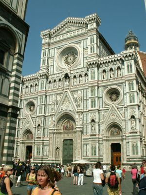

Firenze nevezetességei
Santa Maria del Fiore

Santa Maria del Fiore
Firenze központi épületét, a dómot 1296-ban kezdték építeni. A munka közel száz évig tartott, de a kupolára 1420-ig kellett várni. A hatalmas szerkezet megalkotását Brunelleschinek köszönhetjük. Az építész zseniális technikával, rögzített mintaív nélkül készítette el az óriási, levegős szerkezetet, melynek halszálkához hasonló mintájú boltcikkelyeit láncok erősítik egymáshoz. A kettős kupola átmérője 45 m, magassága 91 m. Az aranyozott gömb 1461-ben került fel a csúcsra. Brunelleschi megbecsülését jelzi, hogy a világi személyek közül egyedül ő kapott síremléket az altemplom kriptájában.
A katedrális homlokzata az elmúlt évszázadok során többször átalakult. 1887-ben nyerte el mai formáját. Díszítéséhez ugyanolyan carrarai fehér, pratói zöld és maremmai rózsaszín márványlapokat használtak fel, mint az épület többi részéhez.
A dóm mellett emelkedik Giotto harangtornya, amely 1359-ben készült el. a 84 m magas torony alsó szintjén hatszögletű, illetve rombusz alakú márványkazetták sorakoznak. A dóm szomszédságában épült fel a keresztelőkápolna is, melynek északi kapuján Ghiberti világhírű domborműveit láthatjuk.